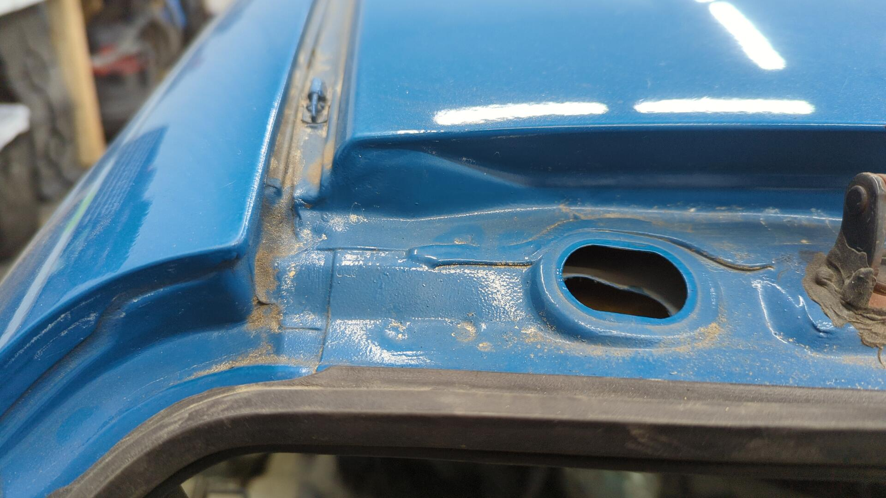

Revival of the Hatch Part 12: No More Cabin Water Leaks
As of lately it’s been hard for me to see the overall progress being made on the hatch because I’m working on too many small steps simultaneously.
Unfortunately that’s just the nature of the beast when it comes to this phase of a project car as you tend to uncover more and more things that need to be done while working through your TODO list. It’s all too easy to dive into another step before finishing the one your currently on.
I’m optimistic though that if I keep picking my way through the list and finish up all the currently in progress steps before taking on any more I should be able to get through this phase and closer to finishing the car.
Goodbye Rusty Horn
Initially I wasn’t planning on replacing the horn but when I went to install it, it didn’t feel right bolting up such a rusty part to fresh paint.

Even though the OEM horn sounds kinda dinky, I didn’t have any real complaints with it so I wasn’t too picky on finding the perfect replacement.
I ended up settling on a Wolo 260-2T mini because of how it’s almost identical in size to the OEM unit and sounds similar.
The only downside to the new horn was that it didn’t have the OEM connector, but by picking up a reverse light sensor to chop the pigtail off of I was able to fix that.
I’ve since learned this connector is a Sumitomo 6181-0070 (HW 090 series) so it can be sourced for even cheaper.

Other than having to drill out the mounting hole on the Wolo horn bracket to work with Honda’s larger m8 bolt, it was a perfect fit.
All in all I’m pretty happy with how it looks.
Custom Brake Line Brackets for the Calipers
My new Koni yellow front shocks and recently converted to disk rear trailing arms didn’t have a way to safely mount the rubber caliper brake line hoses.
This isn’t a major concern, but wanting to make sure the car wouldn’t have any issues with passing tech or the state mandated annual safety inspections I decided to take care of the issue by DIYing some brackets with some scrap metal.
For the front brackets I bent up some 1 1/2" wide strips of 16 gauge that’ll clamp to the shock tube.
Then a small m6x1.0x16 bolt / nut was added. The nut was welded to the backside.
The brackets are 1/16" smaller in diameter than the shock tubes so by tightening the bolt it’ll clamp them to the shock body.
The bolt is also how it’ll attach to the brake lines.

For the rear it was even easier since they’d be mounted to the backside of the rear trailing arms.
This was done with some 1-1/4" 11 gauge angle and a pair of m6x1.0x16 bolts / nuts and a pair of m8x1.25x16 bolts


Epoxied.

The front suspension is currently disassembled so it’ll be a little while before I can install the front brackets.
Time to Fix the Leaky Roof Gutters / Hatch Area
Ever since the car was repainted Laguna Seca Blue the rear hatch area has leaked water when it rains.

It’s leaking because prior to painting, most of the OEM seam sealer was removed from the roof gutters and hatch area but no new sealer was ever added. 
Lots of dirt below the roof trim clips, and some rust coming through the paint.
The lower hatch area is in pretty good shape other than two bumper mounting nuts that had to be replaced with rivet nuts since they had snapped bolts stuck in them.
The black goop behind where the taillight sits is seam sealer I added a couple years back to try and stop the leaks.

It didn’t help.
Using a couple tiny wire wheels, a small sanding block and 80 grit I cleaned out the roof gutters as best as I could.

There was some rust spots that had pretty heavy pitting that I wasn’t able to clean up though.
Since they’re fairly small and the car isn’t going to see snow I’m not too worried about it and decided to just coat over it.


Next up was to tackle the upper hatch area.

Lots of rust was hiding underneath the upper hatch hinges.

Note the lack of seam sealer above the taillights.

Prepped for paint.


After that all that was left was to do behind the taillights.


There’s still more body work to do back here but for now I need to pause on it so I can try and finish up some of the other things I’m currently working on.
Attempting to Touch Up the Front Shock Towers
Even though I said I’d touch up the shock towers later on, I caved and decided to see if I could fix up the paint somehow.
The upper control arm nuts, and upper shock mounting nuts really did a number on the paint. I was particularly worried since I could see a little body filler on one of the bolt holes on the passenger side and since filler is porous I feared it’d let water in under the paint and create the perfect opportunity for rust to take hold.
Since this isn’t a show car, and I’m not interested in redoing the paint right now I figured if I feather edged everything with 180 and touched up the blemishes with epoxy / base coat I could get a decent enough finish without an excessive amount of work.

All done for now. Next steps are to sand the primer with 320 and then spray some reduced epoxy as a sealer before finishing it with basecoat.
New Wiper Fluid Tubing
I found out you can buy the OEM tubing Honda uses for a pretty reasonable price.
I didn’t need nearly that much since I’m only running line for the front wipers, but it’s only available for sale in specific lengths.

The grommets are just generic ones that I drilled holes in.
A New Charge Harness
Since the battery and engine bay fuse box used to be tucked I had to work out a new setup for the charge harness and engine bay grounds.
Instead of staying custom I opted to go back to a mostly OEM setup for the ease of sourcing replacement parts, and price. I bought the battery cables used off Ebay and cleaned them up, and sourced new ground wires.

It’s not as pretty as the old tucked setup I had, but it’s perfectly functional and should mostly be hidden by the intake tube anyways.

Valve cover ground installed.

When I went to hook up the trans ground I remembered I was missing the mounting bracket and had to source one.
Chasing Rust Below the Hood Hinges Uncovered More Leaks
Something that’s always bugged me about the hood hinges was that they were covered in over spray and looked unsightly.
I didn’t want to go crazy on them but figured I could prime them black to match the other engine bay brackets. While prepping them for paint though I found they had rust on them that was too deep to clean up via the grinder.
Not wanting to half ass prepping for paint I figured I’d remove them from the body and blast them in my sand blasting cabinet.
But after removing them I found a bunch of rust where the hinges used to sit.

Wanting to see how far the rust went I used a wire wheel to remove more and more seam sealer until I had uncovered all of the rust and discovered there was a leak letting water in on both sides.
Ugh.
Bottom of the hinges looks pretty gross.
This was the pitting that started it all.
I tried to clean up the rust with the grinder / sander but wasn’t having much luck.

I ended up caving and broke out my portable sand blaster so I could take care of it once and for all.
It’s make a royal mess blasting in the shop so I was really hoping to avoid it but there wasn’t any better options.

Hinges reinstalled and seam sealed.


That’s it for now.
Here’s a sneak peak of some of the updates to come.